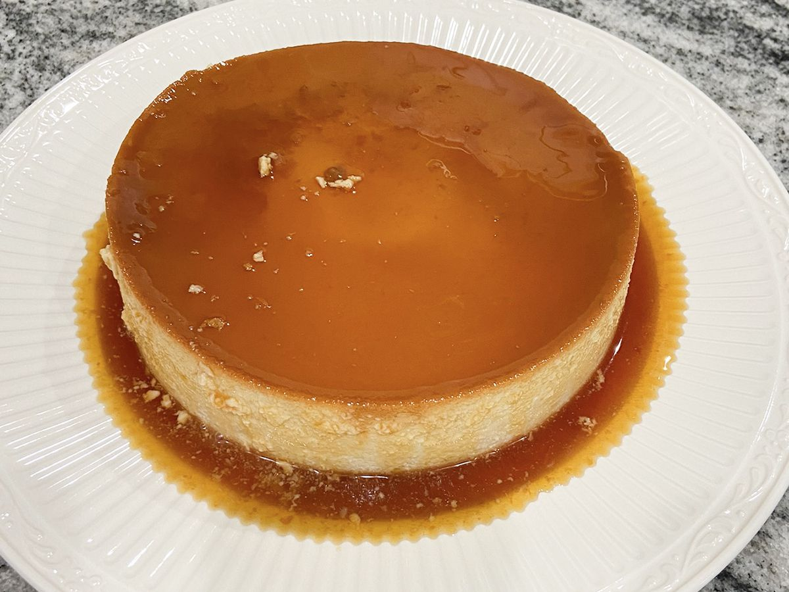

Flan de zanahorias

Delicioso postre tropical de coco con sabores del Caribe
Ingredientes:
- 1 ½ tazas de azúcar blanca, dividida
- 1 lata (14 onzas) de leche condensada azucarada
1 lata (12 onzas líquidas) de leche evaporada
- 6 huevos grandes
- ½ taza de leche
- ½ taza de coco rallado fresco
Preparación:
- Precalienta el horno a 350 grados F (175 grados C).
- Coloque 1 taza de azúcar en una cacerola pequeña a fuego medio. Cocine suavemente sin revolver, pero agite ocasionalmente hasta que se derrita el azúcar. Continúe cocinando hasta que el azúcar se dore, luego viértalo en una fuente de vidrio grande para hornear. Gire e incline el plato para esparcir el caramelo uniformemente sobre el fondo. Deje a un lado para que el caramelo se enfríe y se endurezca, aproximadamente 15 minutos.
- Agrega la leche condensada, la leche evaporada, los huevos, la leche, el coco y la 1/2 taza de azúcar restante a una licuadora. Licue hasta que quede suave, aproximadamente 3 minutos. Vierta sobre el caramelo endurecido en la fuente para hornear.
- Hornee en el horno precalentado hasta que la crema esté firme, aproximadamente 45 minutos. Deja que el flan se enfríe durante 30 minutos a temperatura ambiente. Pasa un cuchillo por los bordes del plato para separar el flan de los lados. Refrigere hasta que esté completamente frío, de 8 horas a toda la noche.
- Para servir, invierta con cuidado el flan sobre un plato para servir con borde; deja que la salsa de caramelo fluya sobre el flan.